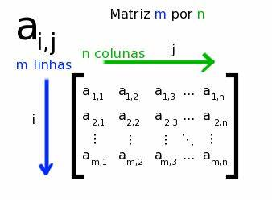

Esse documento foi desenvolvido para organizar meus estudos em álgebra matricial aplicada em R. Aqui você encontrará conceitos, definições, propriedades e aplicações de matrizes e vetores em R.
Author
Wellington Santos Souza
Published
Saturday, 03 August 2024
Este artigo foi escrito em Segunda, 03 de Agosto de 2024.

Porque devemos estudar álgebra matricial?
A teoria é métodos estatísticos multivariados é baseada em álgebra matricial. Por essa razão, é útil, se não essencial, ter uma compreensão sólida de álgebra matricial (Métodos estatísticos multivariados: uma introdução 2021).
Notações
\(A, B, C\)
\(\text{letras maiúsculas representam matrizes}\)
\(u, v, w\)
\(\text{letras minúsculas representam vetores}\)
\(\text{A de tamanho m x n ou (m x n)}\)
\(\text{a matriz A tem linhas m e colunas n }\)
\(A^T\)
\(\text{a transposição da matriz A}\)
\(v^T\)
\(\text{a transposição do vetor v}\)
\(A^{-1}\)
\(\text{o inverso da matriz A}\)
\(\text{det (A)}\)
\(\text{o determinate da matriz A}\)
\(AB\)
\(\text{multilicação das matrizes A e B}\)
\(u ⋅ v; ⟨u,v⟩\)
\(\text{produto escalar de vetores u e v}\)
\(\mathbb{R}\)
\(\text{conjunto de vetores bidimensionais, por exempo 0, -0.3, 2,3.4}\)
\(\mathbb{R}^2\)
conjunto de vetores bidimensionais, por exemplo\(v = [1- 3]^T\)
\(\mathbb{R}^n\)
\(\text{conjunto devetores n-dimensionais}\)
\(v \in \mathbb{R}^2\)
o vetor \(v\) é um elemento de \(\mathbb{R}^2\)
\(|v|_1\)
\(\text{Normal L1 de um vetor}\)
\(|v|_2;|v|;||v||\)
\(\text{Norma L2 de um vetor}\)
\(T:\mathbb{R}2\to\mathbb{R}^3;T(v) = w\)
transformação \(T\) de um vetor \(v \in \mathbb{R}\) no vetor \(w \in \mathbb{R}^3\)
Matrizes, Vetores e escalares
Matriz
Uma matriz m x n é um arranjo de número de com m linhas e n colunas, considerado como uma única entidade.
Subtração: a subtração em duas matrizes de mesmo tamanho é feita subtraindo os elementos correspondentes. Por exemplo, sejam as matrizes A e B criadas anteriormente, temos:
Já a multilicação de duas matrizes definidas como AxB não é tão simples. AxB é definida somente se, o número de colunas de A é igual ao número de linhas de B. Veja o exemplo a seguir, aqui assumimos que A é de tamanho mxn e B nxc, então a multiplicação é definida para reproduzir o resultado AxB.
A matriz A multiplicado pela matriz B usando o R, observe que o código A%*%B produz uma multiplicação de matrizes compatíveis, de acordo com a definição enterior, não é uma multiplicação padrão.
Assim, o elemento da i-ésima linha e k-ésima coluna de AxB é: \[
\sum{a_{ij}*b_{jk} = a_{i1}*b_{1k} + a_{i2}*b_{2k} + ...+a_{in}*b_{nk}}
\] Nesse caso o elemento \(a_{11} = 135\) na multiplicação anteior foi definido por:
Code
sum((A[1,]*B[,1]))
[1] 135
O elemento \(a_{12} = 310\)
Code
sum((A[1,]*B[,2]))
[1] 310
Quando as matrizes A e B são matrizes quadradas AxB está definida. Entretanto AxB é diferente de BxA. Veja o exemplo abaixo:
Matriz quadrada A
Code
A =matrix(c(2,1,-1,1), nrow =2, ncol =2)A
[,1] [,2]
[1,] 2 -1
[2,] 1 1
Matriz quadrada B
Code
B =matrix(c(1,0,1,1), nrow =2, ncol =2)B
[,1] [,2]
[1,] 1 1
[2,] 0 1
Então AxB:
Code
A%*%B
[,1] [,2]
[1,] 2 1
[2,] 1 2
e BxA:
Code
B%*%A
[,1] [,2]
[1,] 3 0
[2,] 1 1
Inversão matricial
A inversão matricial é análogo ao processo comum aritmético de divisão. Onde, para um escalar k, é certamente verdadeiro que \(k*k^{-1}=1\). Veja o exemplo abaixo apicado no R, onde temos o escalar \(k = 978\).
Code
k =matrix(978)k
[,1]
[1,] 978
A matriz inversa \(k^{-1}\) é:
Code
solve(k)
[,1]
[1,] 0.001022495
Então \(k*k^{-1}\) é dado por:
Code
k*solve(k)
[,1]
[1,] 1
De maneira similar se A é uma matriz quadrada e \(A*A^{-1} = I\), em que \(I\) é a matriz identidade, então a matriz \(A^{-1}\) é a inversa de A. Veja o exemplo abaixo:
Lembre-se que, as inversas só exestem para matrizes quadradas, mas nem toda matriz quadrada possui inversa. A matriz inversa de uma matriz 2 x 2, se existe, pode ser facilmente calculada. A equação é:
\[
\begin{bmatrix}
a & b \\
c & d
\end{bmatrix}^{-1} =
\begin{bmatrix}
a/\Delta & b/\Delta \\
c/\Delta & d/\Delta
\end{bmatrix}
\] onde \(\Delta = (a*d)-(b*c)\). Aqui o escalar \(\Delta\) é chamado de determinante da matriz que está sendo invertida. Portanto, se \(\Delta = 0\) a matriz inversa não é definida.
Por isso, se o determinante é 0, então a inversa não existe, e vice-versa. Uma matriz com determinate 0 é chamada de singular.
Uma matriz com a inversa igual à transposta é dita ortogonais. Portanto, A é ortogonal se \(A^{-1} = **A**'\).
Formas quadráticas
Supomos que A é uma mariz quadrada axa e x é um vetor coluna de comprimento a. Então a quantidade Q é: \[
Q=x'Ax
\] Veja o exemplo no R:
Matriz A
Code
# matriz AA =matrix(1:4,2,2)A
[,1] [,2]
[1,] 1 3
[2,] 2 4
Vetor coluna x
Code
x =matrix(10:11,2,1)x
[,1]
[1,] 10
[2,] 11
Assim, Q é igual a:
Code
Q=t(x)%*%A%*%xQ
[,1]
[1,] 1134
Esse escalar chamado de forma quadrática. Pode também ser expresso como: \[
Q=\sum^n_{i=1}\sum^n_{j=1}{x_ia{ij}x_j}
\] Onde,
\(x_i\): elemento da \(i-ésima\) linha de x
\(a_{ij}\): é o elemento na \(i-ésima\) linha e \(j-ésima\) coluna de uma matiz A.
Métodos estatísticos multivariados: uma introdução. 2021. Bookman.
Source Code
---title: "Introdução Álgebra Matricial"subtitle: "Aplicação em R"description: "Esse documento foi desenvolvido para organizar meus estudos em álgebra matricial aplicada em R. Aqui você encontrará conceitos, definições, propriedades e aplicações de matrizes e vetores em R."author: "Wellington Santos Souza"date: "2024-08-03"format: html: code-fold: true code-copy: true code-tools: truecategories: ["Matemática", "R", 'matrizes',"métodos-multivaridados"]open-graph: description: "Matriz" image: ../images/06.matriz/OIP.jpgtwitter-card: description: "Martriz" image: ../images/06.matriz/OIP.jpgbibliography: references.bib---*Este artigo foi escrito em Segunda, 03 de Agosto de 2024.*{fig-alt="Matriz" fig-title="Matriz"}# Porque devemos estudar álgebra matricial?A teoria é métodos estatísticos multivariados é baseada em álgebra matricial. Por essa razão, é útil, se não essencial, ter uma compreensão sólida de álgebra matricial [@métodos2021].### Notações| | ||-----------------------------------------|--------------------------------------------------------------------------------|| $A, B, C$ | $\text{letras maiúsculas representam matrizes}$ || $u, v, w$ | $\text{letras minúsculas representam vetores}$ || $\text{A de tamanho m x n ou (m x n)}$ | $\text{a matriz A tem linhas m e colunas n }$ || $A^T$ | $\text{a transposição da matriz A}$ || $v^T$ | $\text{a transposição do vetor v}$ || $A^{-1}$ | $\text{o inverso da matriz A}$ || $\text{det (A)}$ | $\text{o determinate da matriz A}$ || $AB$ | $\text{multilicação das matrizes A e B}$ || $u ⋅ v; ⟨u,v⟩$ | $\text{produto escalar de vetores u e v}$ || $\mathbb{R}$ | $\text{conjunto de vetores bidimensionais, por exempo 0, -0.3, 2,3.4}$ || $\mathbb{R}^2$ | conjunto de vetores bidimensionais, por exemplo$v = [1- 3]^T$ || $\mathbb{R}^n$ | $\text{conjunto devetores n-dimensionais}$ || $v \in \mathbb{R}^2$ | o vetor $v$ é um elemento de $\mathbb{R}^2$ || $|v|_1$ | $\text{Normal L1 de um vetor}$ || $|v|_2;|v|;||v||$ | $\text{Norma L2 de um vetor}$ || $T:\mathbb{R}2\to\mathbb{R}^3;T(v) = w$ | transformação $T$ de um vetor $v \in \mathbb{R}$ no vetor $w \in \mathbb{R}^3$ |# Matrizes, Vetores e escalares## MatrizUma *matriz* m x n é um arranjo de número de com m linhas e n colunas, considerado como uma única entidade.$$A=\begin{bmatrix} a_{11} & a_{12} & \cdots & a_{1n} \\ a_{21} & a_{22} & \cdots & a_{2n} \\ \vdots & \vdots & \ddots & \vdots \\ a_{m1} & a_{m2} & \cdots & a_{mn}\end{bmatrix}$$Veja o exemplo de uma matriz criada no R abaixo.Para criarmos uma matriz **A** com 5 linhas x 5 colunas no R usamos os seguintes comandos.```{r}# Criando uma matriz 5 x 5A <-matrix(1:25, nrow =5, ncol =5)A```A matriz acima é uma matriz quadrada, pois o número de linhas é igual ao número de colunas.## VetorCaso tivéssemos uma matriz com uma única coluna, teríamos um vetor coluna. Veja o exemplo abaixo.$$\mathbf{c} = \begin{bmatrix} c_1 \\ c_2 \\ \vdots \\ c_m\end{bmatrix}$$```{r}# Criando um vetor coluna da matriz Ac <- A[,1]c```Caso tivéssemos somente uma linha, teríamos um **vetor linha**. Veja o exemplo abaixo.$$\mathbf{r} = \begin{bmatrix} r_1 & r_2 & \cdots & r_n\end{bmatrix}$$```{r}# Criando um vetor linha da matriz Ar <- A[1,]r```## EscalarEm álgebra matricial um *escalar* pode ser definido como um único número $k = a_{11}$```{r}# escalark <- A[3,3]k```## Tipos de MatrizesHá diversos tipos de matrizes, dentre elas podemos citar:**Matriz zero:** matriz onde todos os elementos são iguais a zero.```{r}# Matriz zeroZ <-matrix(0, nrow =5, ncol =5)Z```**Matriz diagonal:** matriz onde todos os elementos fora da diagonal principal são iguais a zero.```{r}# Matriz diagonalD <-diag(1:5)D```**Matriz simétrica:** matriz onde a transposta é igual a matriz original.```{r}# Matriz simétrican =4l =matrix(1:(n:4), nrow = n, ncol = n)S <- l +t(l)S``````{r}# Verificando se a matriz é simétricat(S)```**Matriz identidade:** matriz diagonal onde todos os elementos da diagonal principal são iguais a 1.```{r}# Matriz identidadeI <-diag(1, nrow =5, ncol =5)I```Duas **matrizes são iguais** se tiverem o mesmo número de linhas e colunas e se os elementos correspondentes forem iguais.```{r}X =matrix(1:25, nrow =5, ncol =5)Y =matrix(1:25, nrow =5, ncol =5)# Verificando se duas matrizes são iguaisX == Y```O **traço** de uma matriz quadrada é a soma dos elementos da diagonal principal. Veja o exemplo abaixo aplicado a matrir $X$ criada anteriormente.```{r}# Traço de uma matrizsum(diag(X))```## Operações com Matrizes### Soma e subtração de matrizes**Soma:** a soma em duas matrizes de mesmo tamanho é feita somando os elementos correspondentes. Por exemplo, sejam as matrizes $A$ e $B$ abaixo.```{r}A =matrix(1:25, nrow =5, ncol =5)B =matrix(26:50, nrow =5, ncol =5)# Soma de matrizesA + B```**Subtração:** a subtração em duas matrizes de mesmo tamanho é feita subtraindo os elementos correspondentes. Por exemplo, sejam as matrizes **A** e **B** criadas anteriormente, temos:```{r}# Subtração de matrizesA - B```### MultiplicaçãoMultiplicação de uma matriz com um escalarA multiplicação de um escalar com uma matriz é defina por: a multiplicação de cada elemento de **A** por **k**. Observe o exemplo a seguir aplicado ao R.Escalar K```{r}k```Matriz A```{r}A```Escalar k multiplicado pela matriz A:```{r}# escalar k multiplicado pela matriz A.k * A```Já a multilicação de duas matrizes definidas como **A**x**B** não é tão simples. AxB é definida somente se, o número de colunas de **A** é igual ao número de linhas de **B**. Veja o exemplo a seguir, aqui assumimos que **A** é de tamanho mxn e **B** nxc, então a multiplicação é definida para reproduzir o resultado **A**x**B**.Veja o exemplo aplicado ao R:Matriz **A**```{r}A =matrix(1:15, nrow =3, ncol =5)A```Matriz **B**```{r}B =matrix(1:30, nrow =5, ncol =6)B```A matriz A multiplicado pela matriz **B** usando o R, observe que o código `A%*%B` produz uma multiplicação de matrizes compatíveis, de acordo com a definição enterior, não é uma multiplicação padrão.```{r}A%*%B```Assim, o elemento da i-ésima linha e k-ésima coluna de **A**x**B** é: $$\sum{a_{ij}*b_{jk} = a_{i1}*b_{1k} + a_{i2}*b_{2k} + ...+a_{in}*b_{nk}}$$ Nesse caso o elemento $a_{11} = 135$ na multiplicação anteior foi definido por:```{r}sum((A[1,]*B[,1]))```O elemento $a_{12} = 310$```{r}sum((A[1,]*B[,2]))```Quando as matrizes **A** e **B** são matrizes quadradas **A**x**B** está definida. Entretanto AxB é diferente de **B**x**A**. Veja o exemplo abaixo:Matriz quadrada **A**```{r}A =matrix(c(2,1,-1,1), nrow =2, ncol =2)A```Matriz quadrada **B**```{r}B =matrix(c(1,0,1,1), nrow =2, ncol =2)B```Então **A**x**B**:```{r}A%*%B```e **B**x**A**:```{r}B%*%A```## Inversão matricialA inversão matricial é análogo ao processo comum aritmético de divisão. Onde, para um escalar **k**, é certamente verdadeiro que $k*k^{-1}=1$. Veja o exemplo abaixo apicado no R, onde temos o escalar $k = 978$.```{r}k =matrix(978)k```A matriz inversa $k^{-1}$ é:```{r}solve(k)```Então $k*k^{-1}$ é dado por:```{r}k*solve(k)```De maneira similar se **A** é uma matriz quadrada e $A*A^{-1} = I$, em que $I$ é a matriz identidade, então a matriz $A^{-1}$ é a inversa de **A**. Veja o exemplo abaixo:```{r}A =matrix(c(2,1,1,2),2,2)A```Inversa da matriz **A**```{r}solve(A)```então, $A*A^{-1}$ é:```{r}round(A*solve(A))```Lembre-se que, as inversas só exestem para matrizes quadradas, mas nem toda matriz quadrada possui inversa. A matriz inversa de uma matriz 2 x 2, se existe, pode ser facilmente calculada. A equação é:$$\begin{bmatrix}a & b \\c & d\end{bmatrix}^{-1} = \begin{bmatrix}a/\Delta & b/\Delta \\c/\Delta & d/\Delta\end{bmatrix}$$ onde $\Delta = (a*d)-(b*c)$. Aqui o escalar $\Delta$ é chamado de *determinante* da matriz que está sendo invertida. Portanto, se $\Delta = 0$ a matriz inversa não é definida.Por isso, se o determinante é 0, então a inversa não existe, e vice-versa. Uma matriz com determinate 0 é chamada de **singular**.Uma matriz com a *inversa* igual à *transposta* é dita **ortogonais**. Portanto, **A** é ortogonal se $A^{-1} = **A**'$.# Formas quadráticasSupomos que **A** é uma mariz quadrada axa e x é um vetor coluna de comprimento a. Então a quantidade Q é: $$Q=x'Ax$$ Veja o exemplo no R:Matriz **A**```{r}# matriz AA =matrix(1:4,2,2)A```Vetor coluna **x**```{r}x =matrix(10:11,2,1)x```Assim, Q é igual a:```{r}Q=t(x)%*%A%*%xQ```Esse escalar chamado de *forma quadrática*. Pode também ser expresso como: $$Q=\sum^n_{i=1}\sum^n_{j=1}{x_ia{ij}x_j}$$ Onde,- $x_i$: elemento da $i-ésima$ linha de x- $a_{ij}$: é o elemento na $i-ésima$ linha e $j-ésima$ coluna de uma matiz **A**.# # Referências